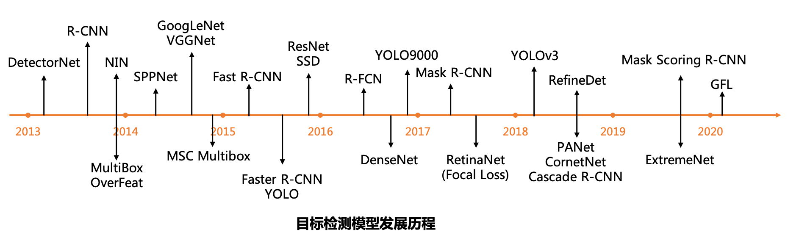

计算机视觉的任务有：图像分类、物体检测、语义分割、文字识别、人脸识别等
目标检测
目标检测（Object Detection）是计算机视觉中极为重要的基础问题，是实例分割（Instance Segmentation)、场景理解（Secne Understanding）、目标跟踪（Object Tracking）、图像标注（Image Captioning）等问题的基础。
目标检测任务：给定一张图片，将图片中的每个物体识别出来并且提出一个置信度，用矩形方框（Bounding Box）或者不规则的区域标识出来。
目标检测模型分为单步（one-stage）模型和两步（two-stage）模型两大类。单步模型在计算效率上有优势，两步模型在检测精度上有优势。
单步模型是指没有独立地、显式地提取候选区域（region proposal），直接由输入图像得到其中存在的物体的类别和位置信息的模型。例如 OverFeat、SSD（Single Shot multibox-Detector）、YOLO（You Only Look Once） 等模型。
两步模型是指有独立的、显式的候选区域提取过程，即先在输入图像上筛选出一些可能存在物体的候选区域，然后针对每个候选区域，判断其是否存在物体，如果存在就给出物体的类别和位置修正信息。例如 R-CNN、SPPNet、Fast R-CNN、Faster R-CNN、R-FCN、Mask R-CNN 等模型。
目标检测历史

在一开始的 CNNs 上，把一张图片划分成为固定的区域，然后识别这些区域中是否有某个物体，有的话就把这个区域标识出来。但是在实际中，图片上的物体大小是不固定的，用这种固定大小的区域去识别物体显然是不合理的。人们想到，如果想要让框更加合适，可以增加框的数量，然后让每个区域都变得尽可能地小。但是这样框太多的时候，又会导致计算量的增加。
基于区域的卷积神经网络（Region-based CNN，R-CNN）：是第一个将 CNN 用于目标检测的深度学习模型。它是是解决这种缺点的更好方法，它使用生成区域建议的方式来选择区域。R-CNN 的选框方式是根据选择性搜索（selective search）来进行的，选框也叫做区域（regions）。
选择性搜索：一个物体会包括四种信息：不同的尺度、颜色、纹理和边界，选择性搜索目标就是识别这些模式，提出不同的区域。首先，先生成最初的分割得很细的子分割，然后再将这些很细的小区域按照颜色相似度、纹理相似度、大小相似度和形状相似兼容性来合并成更大的区域。这个最后合成的区域就是物体在图片中的位置，即感兴趣区域（Region of Interest，RoI）。
得到的 RoI 大小是不一样的，将这些 RoI reshape成 CNN 输入的大小，然后 CNN 提取每个区域的特征值，用支持向量机（Support Vector Machine，SVM）来对这些区域进行分类，最后边界框回归（Bounding Box Regression）就预测生成的框。
R-CNN 具有的不足就在于，每一张图片都会生成很多个 RoI，整个过程用了三个模型：特征提取的 CNN、物体分类的 SVM、预测边界框的回归模型。这些过程让 R-CNN 变得非常慢，预测一张图片要几十秒。
Fast R-CNN：添加了一个 RoI 池化层（RoI Pooling Layer）来把所有的建议区域转换成适合的尺寸，输入到后面的全连接层（Fully Connection）。Fast R-CNN 将 R-CNN 的三个独立的模型集合到一个模型中，因为减少了很多的计算量，Fast R-CNN 在时间花费大大地减少了。
具体步骤为：图片通过 CNN 得到 RoI，然后 RoI 池化层将 RoI 改变成相同的尺寸，再将这些区域输入到全连接层上进行分类，同时使用 softmax 和线性回归层（Linear Regression Layers）来输出 Bounding Boxes。
Faster R-CNN：Fast R-CNN 依然在使用选择性搜索来作为寻找 RoI 的方法，虽然速度提高了，但是一张图片依旧需要花费 2 秒的时间。因此，Faster R-CNN 使用一个区域建议网络（Region Proposal Network，RPN）来获得更高的效率。RPN 图片特征 map 作为输入，生成一系列带目标分数的建议，也就是告诉网络给出的区域有物体的可能性有多大，分数越高代表包含了物体的可能性越高。
具体步骤：
- 把图片作为输入放进卷积网络中去，返回的是一个特征映射（feature map）；
- RPN 处理这些 map，返回带分数的物体建议；
- 接下来的 RoI pooling 把这些建议都 reshape 成相同的尺寸；
- 最后，放到含有 softmax 层和线性回归层的全连接层上，来分类和输出 bounding boxes。
RPN 被集成在了网络里面，等于从区域建议到最后的分类回归都在同一个网络，实现了端到端。即我们给这个网络输入一张图片，网络就会输出 bounding boxes 和分数。
区域建议网络（Region Proposal Network，RPN）：在 RPN 在这个 map 上使用一个滑动窗口（sliding window），在每个窗口中都会生成 k 个不同形状和大小的 anchor boxes。Anchor 就是在图片中有不同形状和大小的但具有固定尺寸的边界框。什么意思呢？就是每一个 anchor 都是固定的大小，比如有 $3\times3$、$6\times 6$、$3\times 6$、$6\times 3$ 这些，他们和最后的 bounding boxes 不一样，anchor 的尺寸都是固定的。对于每一个 anchor，RPN 会做两件事情：
（1）首先预测 anchor 框出的部分属于物体的可能性；
（2）然后对 anchor 生成的 bounding box 做回归，去调节这个 anchor 能使它更加好的框出物体。
在 RPN 之后我们会得到不同形状大小的 bounding boxes，再输入到 RoI 池化层中。在这一步，虽然知道 boxes 里面是一个物体了，但其实是不知道它属于哪个类别的。就好像是，它知道这个东西是个物体，但是不知道是猫是狗还是人。
RoI 池化层的作用就是提取每个 anchor 的固定大小的 feature map。这些 feature map 最后就被送到全连接层里去做 softmax 分类和线性回归。最后就会得到分类好的又有 bounding box 的物体了。
通过使用端到端的方式去进行，并且也不会考虑所有的 RoI，处理一张图片只需要 0.2 秒。
RetinaNet 中的 Focal Loss —— 解决正负样本不均衡问题
在 RetinaNet 的论文 Focal Loss for Dense Object Detection 中提出了一个新的损失函数 —— Focal Loss，主要用于解决在单步目标检测场景上训练时前景（foreground）和背景（background）类别极端失衡（比如 1:1000）的问题。
一般来说，对于二分类问题，交叉熵损失为：
\[\text{CE}(p,y)=\begin{cases}-\log(p),\qquad \text{if } y=1\\ -\log(1-p),\quad \text{otherwise}. \end{cases}\]
其中 $y\in\{\pm 1\}$ 是类别标签，$p\in[0, 1]$ 是模型对于样本类别属于 $y=1$ 的预测概率，定义
\[p_t\begin{cases}p, \qquad \text{if } y=1,\\ 1-p, \quad \text{otherwise}. \end{cases}\]
因此交叉熵损失可以重写为 $\text{CE}(p,y)=\text{CE}(p_t)=-\log(p_t).$
人脸识别
人脸识别中的损失函数
Softmax Loss：最常见的人脸识别函数，原理是去掉最后的分类层，作为解特征网络导出解特征向量用于人脸识别。
\[\hat{\boldsymbol{y}}=\text{softmax}(\boldsymbol{W}^\top \boldsymbol{x})=\frac{\exp(\boldsymbol{W}^\top \boldsymbol{x}+\boldsymbol{b})}{\boldsymbol{1}^\top_C\exp(\boldsymbol{W}^\top \boldsymbol{x}+\boldsymbol{b})},\]
其中 $\boldsymbol{W}=[\boldsymbol{w}_1\cdots,\boldsymbol{w}_C]$ 是由 C 个类的权重向量组成的矩阵，$\boldsymbol{1}^\top_C$ 为 C 维的全 1 向量，$\hat{\boldsymbol{y}}\in\mathbb{R}^C$ 为所有类别的预测条件概率组成的向量，第 c 维的值是第 c 类的预测条件概率。
\[\mathcal{L}_{\text{softmax}}=-\frac{1}{N_b}\sum_{i=1}^{N_b}\log \frac{\exp({\boldsymbol{w}_{y_i}\boldsymbol{x}+b_{y_i}})}{\boldsymbol{1}^\top_C\exp(\boldsymbol{W}^\top \boldsymbol{x}+\boldsymbol{b})},\]
其中 $\boldsymbol{w}_{y_i}, b_{y_i}$ 代表实际标签 $y_i$ 对应的权重和偏置。softmax 在训练的时候收敛迅速，但是精确度一般达到 0.9 时就不会再上升。一方面作为分类网络，softmax 不能像 metric learning 一样显式地优化类间和类内距离，所以性能不会特别好；另外，人脸识别的关键在于得到泛化能力强的 feature，与分类能力并不是完全等价的。
L-Softmax Loss：
SphereFace（A-Softmax）：
Focal Loss：
Triplet Loss：
Center Loss：